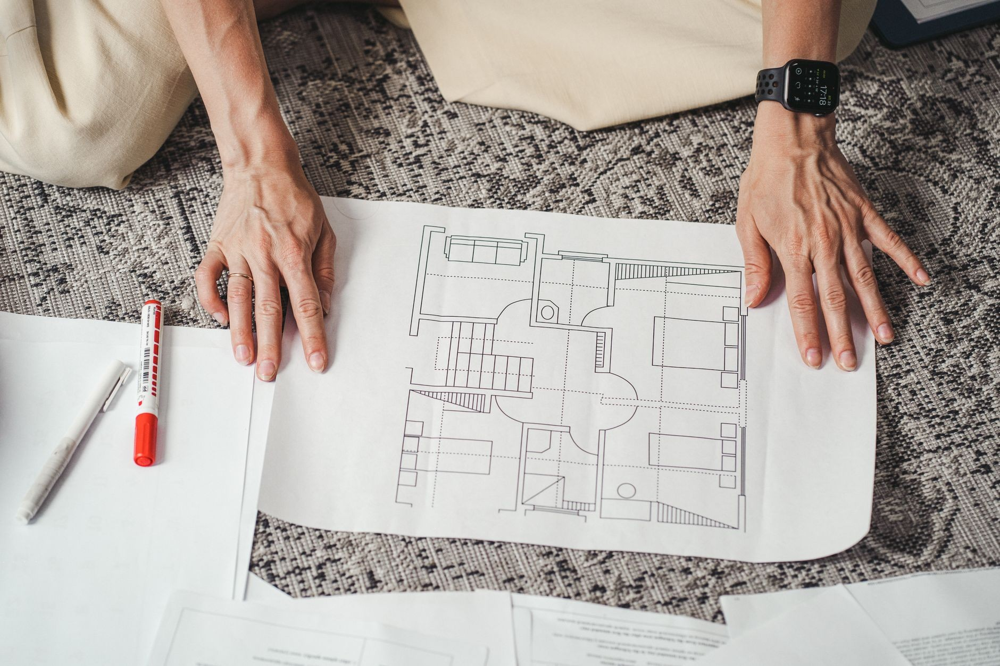

Strona głównaO nas
Elektrycyze Szczecina.
Elektrodom działa od 2012 roku. Instalacje, automatyka i zabezpieczenia w Szczecinie i okolicy.

O firmie
Firmaz nazwiskiem.
Elektrodom prowadzi Bartosz Sierakowski. Od 2012 roku robimy w Szczecinie instalacje elektryczne w domach, mieszkaniach i obiektach firmowych.
Oprócz zwykłej elektryki zajmujemy się automatyką, monitoringiem CCTV, systemami alarmowymi, sygnalizacją pożarową i instalacjami antenowymi. Jedna ekipa od tablicy po kamerę nad bramą.
Klienci w opiniach piszą o tym samym: szybki termin, rozsądna cena i wszystko wytłumaczone po ludzku. Dlatego jak czegoś nie robimy, mówimy to wprost, zamiast brać robotę na siłę.
Poza Szczecinem dojeżdżamy do Stargardu, Polic, Goleniowa, Gryfina i Pyrzyc. Na wykonane prace dajemy gwarancję.
+48 698 686 608Elektrodom w liczbach
Liczby,które da się sprawdzić.
Mówimy wprost
Jak czegoś nie robimy, mówimy to od razu, zamiast brać robotę na siłę.
Cena przed robotą
Zanim wyjmiemy narzędzia, wiesz, ile zapłacisz.
Wracamy, gdy trzeba
Coś nie gra po robocie? Przyjeżdżamy i mierzymy jeszcze raz.

Opinie z Fixly
Słowo klientówz Fixly.
Oświetlenie zostało naprawione szybko i skutecznie. Plus fachowe wyjaśnienia. Jestem bardzo zadowolona i gorąco polecam Pana Bartosza.
Pan Bartosz uporał się z moimi problemami w dosłownie 15 minut. Wyposażony w odpowiednie narzędzia i dużą wiedzę od razu widać było że wie co robi. Osoba słowna i punktualna
Bardzo szybki i dobry kontakt, punktualne przybycie - po godzinie od nawiązania kontaktu. Płyta indukcyjna podłączona a karta gwarancyjna podbita. Polecam.
- Na Fixly od 2018 roku
- Dane firmy sprawdzone w GUS
- Średnia ocen 5,0
Kontakt
Coś do zrobienia?Zadzwoń.
Opowiedz, co trzeba zrobić, a podpowiemy jak i podamy cenę.